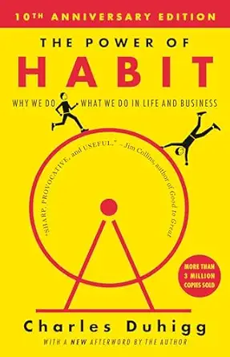
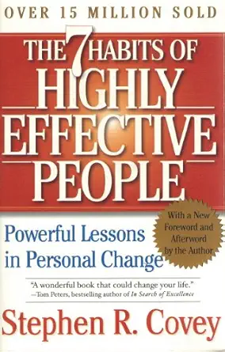

My Favorite Books
These three books have had a big impact on how I think about habits, success, and personal growth.
- The Power of Habit by Charles Duhigg
-

Image: The Power of Habit by Charles Duhigg via Amazon.Explains how habits are formed and how understanding the “habit loop” can help you build better routines and break bad ones.
- The 7 Habits of Highly Effective People by Stephen R. Covey
-

Image: The 7 Habits of Highly Effective People by Stephen R. Covey via Amazon.Focuses on timeless principles like proactivity, prioritization, and empathy to help individuals lead purposeful and effective lives.
- The Compound Effect by Darren Hardy
-
Image: The Compound Effect by Darren Hardy via Amazon.Shows how small, consistent actions, good or bad, can multiply over time to create massive results in life and success.
You can find these books on Amazon.